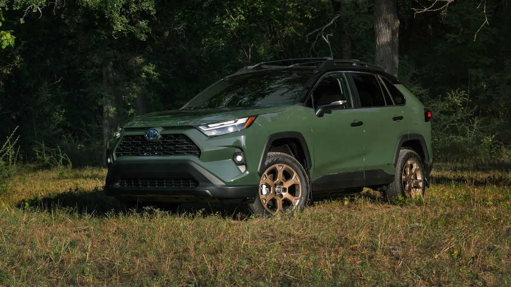
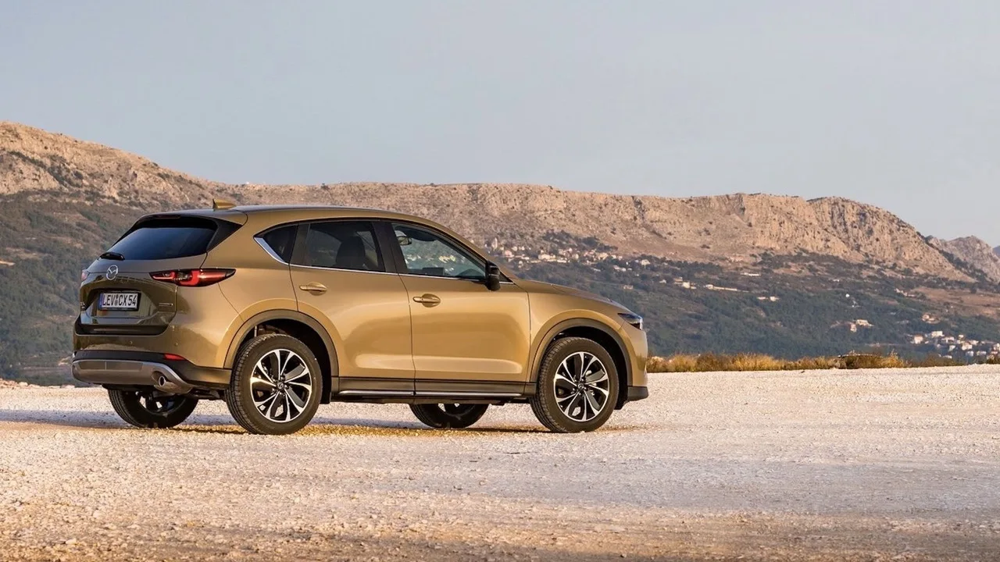
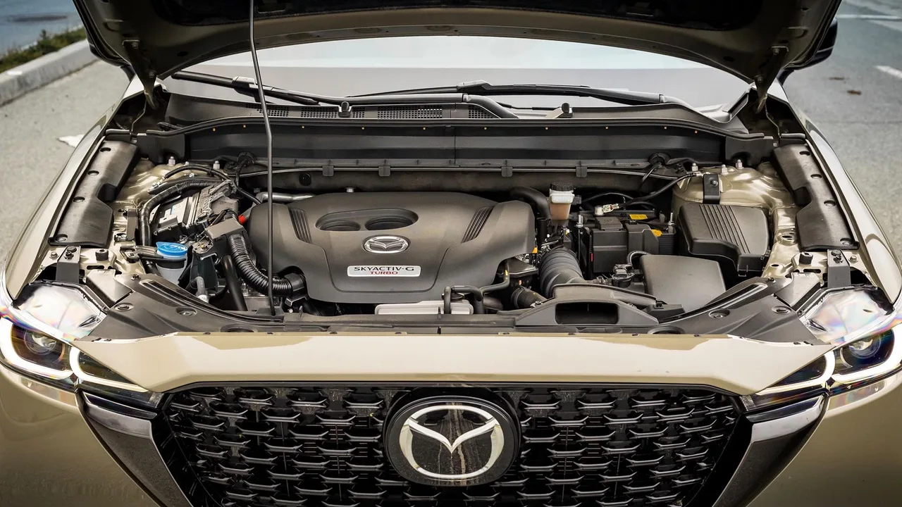
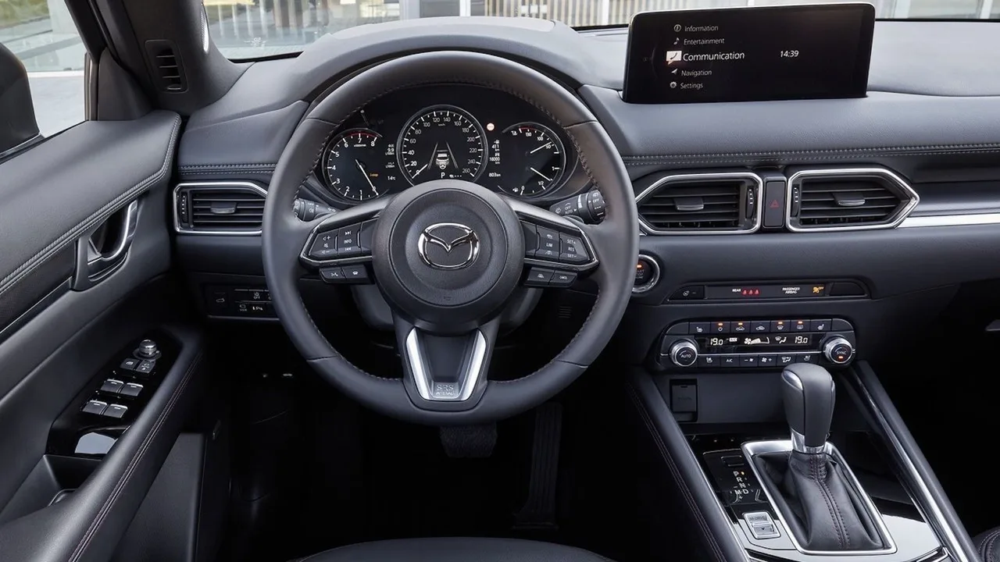

▲ 마쓰다 CX-5. 판매량에서는 밀리지만 가격 대비 구성에서는 다른 이야기가 나온다
컴팩트 크로스오버를 알아보고 있다면 RAV4는 거의 자동으로 후보에 오릅니다.
이유는 분명합니다. 신뢰성과 낮은 유지비에서 확고한 평판을 갖고 있고, 가격 대비 장비도 충실하며, 이 세그먼트 기준으로 디자인도 나쁘지 않습니다. 되팔 때 가치도 잘 유지됩니다.
그런데 그 인기 때문에 대안을 찾는 사람도 생깁니다.
1. RAV4가 강한 이유
RAV4의 지배력은 놀라운 일이 아닙니다. RAV4라는 이름은 자동차 시장에서 가장 신뢰받는 네임플레이트 중 하나가 됐고, 그것은 가장 큰 구매층에서의 성공을 뜻합니다.
신뢰할 수 있고, 값이 적당하고, 실용적이며, 매일의 동반자로 완벽한 차를 원하는 사람들에게 맞습니다.
| 모델 | 판매량 |
|---|---|
| 토요타 RAV4 | 47만 9,288대 |
| 혼다 CR-V | RAV4보다 7만 5,000대 이상 적음 |
| 마쓰다 CX-5 | 13만 6,333대 |

▲ 토요타 RAV4. 컴팩트 크로스오버 시장의 기준점 역할을 한다 ⓒ CarBuzz
2. CX-5는 다른 곳을 봅니다
마쓰다는 토요타보다 좁은 시장을 겨냥합니다. 더 스포티해 보이는 차, 그리고 운전이 더 재미있는 차를 원하는 사람들입니다.
판매량 4분의 1이라는 숫자는 실패의 증거가 아니라 겨냥한 표적이 다르다는 증거에 가깝습니다.

▲ CX-5는 판매량이 아니라 주행 감각으로 승부하는 쪽을 택했다 ⓒ CarBuzz
3. 그런데 가격표가 뒤집힙니다
여기서 이상한 일이 벌어집니다. 터보차저에 사륜구동, 260마력을 갖춘 마쓰다 CX-5가, 전륜구동 토요타 RAV4보다 1,000달러 싸게 매겨집니다.
같은 세그먼트에서 구동방식과 출력이 모두 위인 차가 더 싸다는 것은 흔한 구도가 아닙니다. 판매량이 적은 쪽이 감수하는 가격 정책이기도 합니다.
| 항목 | 마쓰다 CX-5 터보 AWD | 토요타 RAV4(전륜) |
|---|---|---|
| 과급 | 터보 | 자연흡기 |
| 구동 | AWD | FWD |
| 출력 | 260마력 | 상대적으로 낮음 |
| 가격 | 1,000달러 저렴 | 기준 |

▲ 터보 엔진과 사륜구동을 갖추고도 가격이 아래에 놓인다 ⓒ CarBuzz
4. 정비비는 생각만큼 다르지 않습니다
대부분은 여전히 RAV4를 신뢰성의 왕으로 봅니다. 그래서 CarBuzz는 이 기사에 두 모델의 정비비 비교 항목을 추가했습니다.
결론은 둘 사이 차이가 크지 않다는 것이었습니다. "마쓰다는 유지비가 더 든다"는 통념이 실제 수치에서 그만큼 벌어지지는 않는다는 이야기입니다.
📍 신뢰성 통념을 확인하는 법
브랜드 이미지가 아니라 해당 모델·해당 연식의 데이터를 봐야 합니다.
같은 브랜드 안에서도 모델별 편차가 크고, 같은 모델 안에서도 파워트레인에 따라 고장 양상이 다릅니다. 터보 모델과 자연흡기 모델은 다른 차라고 보는 편이 안전합니다.
5. 어느 쪽을 골라야 하나
정리하면 선택 기준은 명확해집니다.
| 우선순위 | 선택 |
|---|---|
| 잔존가치·안정성 | RAV4 — 되팔 때 유리, 수요층 두터움 |
| 주행 감각·장비 대비 가격 | CX-5 터보 AWD |
| 연비 | RAV4 하이브리드 |
| 디자인 | 취향 — 다만 CX-5가 더 스포티한 방향 |

▲ CX-5의 실내. 마쓰다가 공들이는 영역이자 구매를 가르는 지점이다 ⓒ CarBuzz
6. 국내에서는 어떤가
이 비교는 미국 시장 기준입니다. 마쓰다는 국내에서 정식 판매되지 않으므로 CX-5를 직접 고를 수는 없습니다.
그래도 시사점은 남습니다. 같은 세그먼트에서 판매량 1위 모델이 반드시 가격 대비 구성에서도 1위는 아니라는 것입니다. 국내 시장에서도 베스트셀러와 그 아래 순위 모델을 같은 예산에서 트림 단위로 비교하면 비슷한 역전이 나타나는 경우가 있습니다.
확인 방법은 단순합니다. 총액이 같은 두 대를 놓고 구동방식·출력·기본 장비를 나란히 적어보는 것입니다. 브랜드 순위와 다른 결과가 나오는 일이 생각보다 잦습니다.